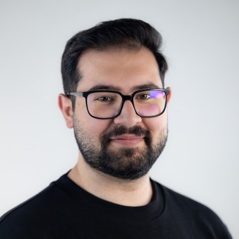

Carl von Ossietzky University of Oldenburg
Oct 2024 — Present
M.Sc. Engineering of Socio-Technical Systems (Specialization: Systems Engineering)

· Master's Candidate in Nanoscale Robotics & Automation . Software Engineer @ SmarAct · M.Sc. Engineering of Socio-Technical Systems
Oldenburg, Lower Saxony, Germany
Master's student in Systems Engineering with a focus on embedded and high-precision systems. Currently a Software Engineer at SmarAct, working on a Master's thesis dedicated to building an automation framework for nanoscale movements.
Solid foundation in micro-robotics and microscopy principles (SEM, SPM, FIB/EBiD), with a focus on bridging robust software solutions and complex physical hardware. Always looking for new challenges and ways to keep learning.
Precision control engineering and systems integration for the nanoscale. My work focuses on bridging software architecture with physical hardware to manipulate and characterize nanomaterials. I am particularly interested in closed-loop piezo-control, machine-vision integration, and applying systems engineering principles to interdisciplinary nano- and quantum research.
Ex-situ nanowire pick-and-place under an optical microscope, using a 6-DoF piezo-positioning setup. Porting and extending an existing Python-based teleoperation framework to a new SDK environment, then building toward scripted and machine-vision-guided automation.
Software & Embedded Systems
Nanotechnology & Characterization Principles
Thesis & Lab Applications
Engineering desktop applications and UI architecture for precision positioning systems by implementing C++/Qt/QML components.
Investigated deterministic network infrastructure, host-switch topologies, and simulation modeling.
Supported the planning and website for RISE, a new department at QVLS built around inclusion, support, and exchange within the quantum community.